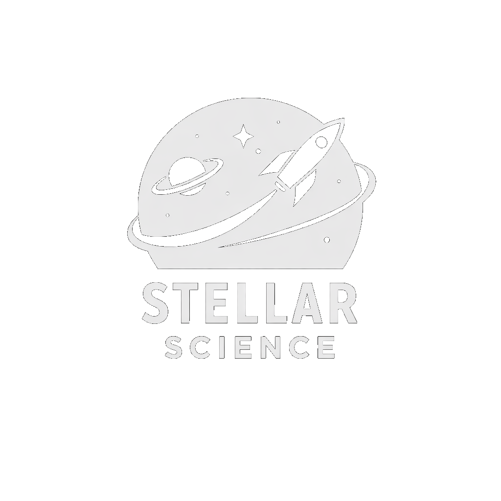

# 2027-jmss-interview-yr-10
A focused space for students preparing for a JMSS Year 10 interview.

Stellar ScienceJoin DiscordStudents preparing for JMSS use Stellar Science Club as a place to discuss preparation, share advice and study alongside other students on the same journey.
The server has specialised channels for different parts of the JMSS journey, so preparation doesn't get buried in general chat.
A focused space for students preparing for a JMSS Year 10 interview.
Advice and discussion around Year 11 exams and study preparation.
A dedicated channel for students preparing for the 2028 JMSS Year 10 entry pathway.
A dedicated space for students working towards 2028 JMSS Year 11 entry.
Stellar Science Club's YouTube presence gives the community another place for study-session content and science material. If you're preparing for JMSS, you can combine the Discord's specialised channels with the club's wider study content.